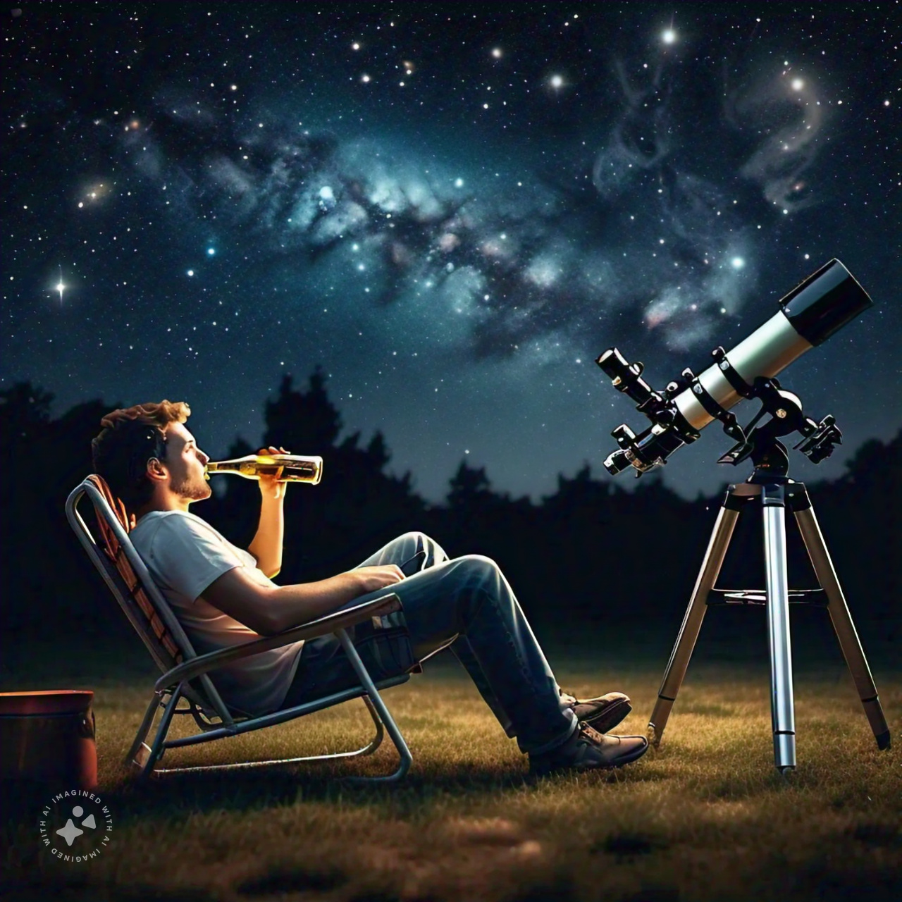

Introduction
Well...
Imagine combining the thrill of stargazing with the satisfaction of building something from scratch. That's exactly what I've set out to do.
I've embarked on an exciting journey to master the Rust programming language through a hands-on, real-world project. My mission? To develop a telescope mount controller, step by step, as I grow my Rust skills. The heart of this project will be an ESP32-based 3D printer board, which will control the stepper motors responsible for positioning the mount.

But why take on such a challenge? Well, my recent exposure to Rust programming on ESP32s has ignited a passion to dive deeper into this powerful language. Simultaneously, I'm eager to explore the capabilities of the ESP32, particularly in the context of telescope mount control. As an aspiring amateur astronomer, I'm keen to elevate my stargazing game, but I'm not content with simply purchasing off-the-shelf solutions. Ultimately, I want pin-point stars in my astrophotography.
Sure, I could buy a ready-made mount, load up on software, and start observing right away. But where's the fun in that? I'm after the thrill of understanding the intricacies, of building something with my own hands (and code). Plus, let's be honest - those high-end astronomy mounts come with price tags that might make the Chief Financial Officer of my household raise an eyebrow or two.
At its core, an astronomy mount's job is to move along two axes to point at specific areas of the night sky. Sounds simple enough, right? So I thought to myself, "Why not build one?" After all, the basic premise doesn't seem too complex. How hard could it be?
Join me on this adventure as I attempt to marry the worlds of Rust programming, ESP32 microcontrollers, and amateur astronomy. It's going to be a learning experience, a test of perseverance, and hopefully, a whole lot of fun. Let's see if we can reach for the stars - both literally and figuratively!

üí°TIP - I asked MetaAI to generate this image with this prompt "imagine a guy sitting in a lawn chair, drinking a beer, and a telescope beside him pointed upwards into the night sky, filled with galaxies". I think it's a great visual of what I'm trying to accomplish. üëç
Note: This is a work in progress. I'm still working on the project, so expect some rough edges. Also, I've created this book (using mdbook) as a way to capture my thoughts on solving some of these challenges along the way. I will/may miss stuff that the Rust Book may cover, so please feel free to check it out. I've realized i'm jumping all over the place, so, i'd like to call out that perhaps the end result doesn't actually show how i got there.
Further, this book is really just a reference for me, so I'm not going to spend a lot of time on it. I'm going to try to keep it updated as I go along, but I'm not going to be a stickler for keeping it up to date in sync with the code.
I am NOT a professional programmer! I wanted to learn Rust, and I'm hoping that this project will help me do that. Sure there are better ways to do something, but my mantra right now is "Git-R-Done". I can work out later how to improve on this project.